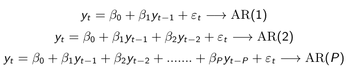
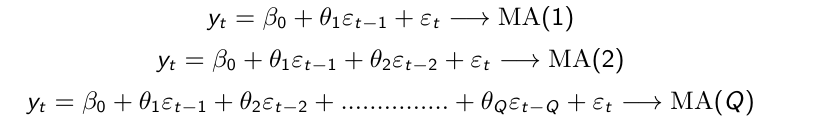
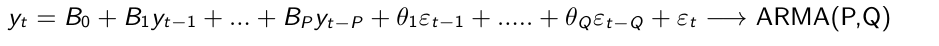
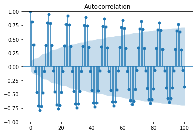
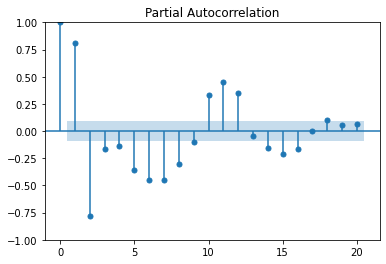
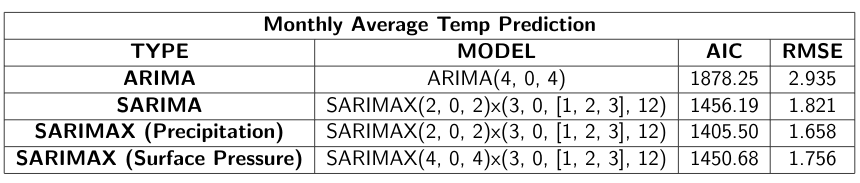

Stationarity of data And its Importance:
Stationarity is a statistical property
-
Constant mean
-
Constant Variance
- No Seasonality
- Repeating trend or pattern over time
To convert a Non-Stationary Data into Stationary.There are different ways to kill Non-Stationarity of different types.
-
Differencing , when Y(t) is following a linear trend.Y(t)=Y(t)-Y(t-1)
-
Sometime we need to do multiple time Differencing.
- Sometimes we take Y(t)=LOG(Y(t)) in case where Y(t) is ofexponential type forms.
- Seasonal differencing Y(t)=Y(t)-Y(t-1)
MODEL:
A simple combination of Auto regression and Moving Average model.
Auto Regression:
Uses Past Values to make a prediction.

Moving Average:
Uses Past errors to make a prediction.

ARMA model:
Uses Past errors and Past values to make a prediction.

- εn is the error in Ynprediction
- βi and θj are coefficients
Finding parameters for model:
We have used ACF plots, PACF plots and AIC scores to set the model function and find p,q,d,P,D,Q and s values.
We use ACF And PACF plots, which measure the correlation between current time period and previous time lags.
Auto Correlation Function:
Measure direct and indirect effect of previous time lags on current value.Used to find order of Moving Average Model.

Partial Auto Correlation Function:
Measure only direct effect of previous time lags on current value value.Used to find order of Auto Regressive Model.

AIC:
We mainly used AIC score for model fitting upto ARIMA model but for SARIMAX we used the ACF and PACF plots to set the model function.AIC lets us to test how well our model fits the data set without over-fitting it. The AIC score rewards models that achieve a high goodness-of-fit score and penalizes them if they become overly complex.
Predictions:
-
{Monthly Average Temperature Prediction using {ARIMA(4,0,4)}}:
Trained for 450 months and Tested for next 30 months.
It has a RMSE of 2.935 for Mean temp being 25.051 and AIC = 1878.252.

-
Monthly Average Temp Prediction SARIMA((2,0,2),(3,0,3,12))}:
Trained for 450 months and Tested for next 30 months.
It has a RMSE of 1.820 for Mean temp being 25.051 and AIC = 1456.189

-
Monthly Average Temp Prediction SARIMAX (Surface Pressure)((2,0,2),(3,0,3,12))}:
Trained for 450 months and Tested for next 30 months.
It has a RMSE of 1.75 for Mean temp being 25.051 and AIC = 1450.676
.png)
Monthly Average Temp Prediction SARIMAX (Precipitation)((2,0,2),(3,0,3,12))}:
Trained for 450 months and Tested for next 30 months.
It has a RMSE of 1.658 for Mean temp being 25.051 and AIC = 1405.498.
.png)
Conclusion and Future Plans:
Mean of Temperature over Test data is 25.051 celcius.

-
We see here that the model SARIMAX with exogenous variable as Precipitation is most accurate of all.
-
Using SARIMAX model we were unable to tune it directly using AIC value so plan to do it.
-
Our prediction for day to day average temperature using any of the above model was not good. We are thinking to use RNN (mainly LSTM) and see how it works.
-
We will try to change the model function of SARIMAX and make it to depend on past values of Exogenous variable.